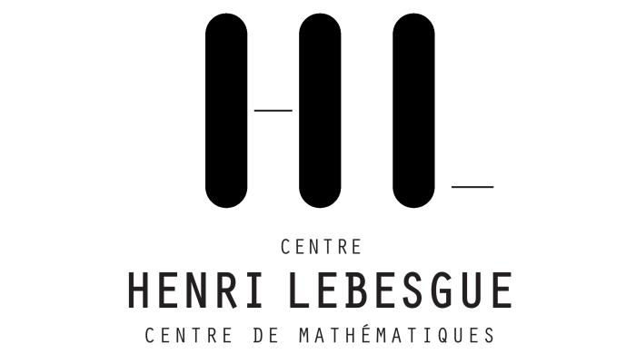

Une masterclasse après la première année de master en mathématiques
Deux cours, dispensés par deux chercheuses, sont proposés, l'un
en Analyse/Probabilités et l'autre en Algèbre/Géométrie. Les participantes
et participants peuvent suivre l'un et l'autre des deux cours,
selon leurs souhaits. Ces lectures sont ouvertes à toutes et tous.
Afin d'inscrire les Lectures dans la durée, les Lectrices et les marraines des Lectures, proposent un mentorat aux participantes qui le souhaitent.
Nicolas Raymond
(Univ. Angers)
Susanna
Zimmermann (Univ. Angers)
